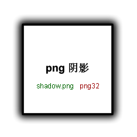
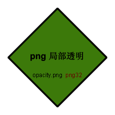

IE PNG Fix v1.0 / 2.0 Alpha 2 - IE6支持PNG透明(alpha通道)的4种方法
以图片方式插入透明png:



以CSS背景方式插入透明png:
注意事项:
- images目录的blank.gif透明图片作为png图片的替换,如目录有变请修改iepngfix.htc里blank.gif代码路径
- iepngfix.htc为IE6所用,本例子以"_"hack作为区分
- 应用有PNG透明图片的标签,均要读取behavior:url("iepngfix.htc")
- iepngfix方法在背景应用上只能做到background-image的效果, 背景重复坐标调用等暂时实现不了
- 透明png背景图片会以所在层的宽高度拉伸填充,border计算在层的宽高内(所以宽高是232px)
源文:http://blog.gulu77.com/?p=147